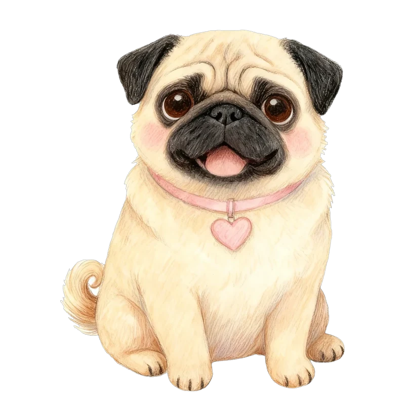
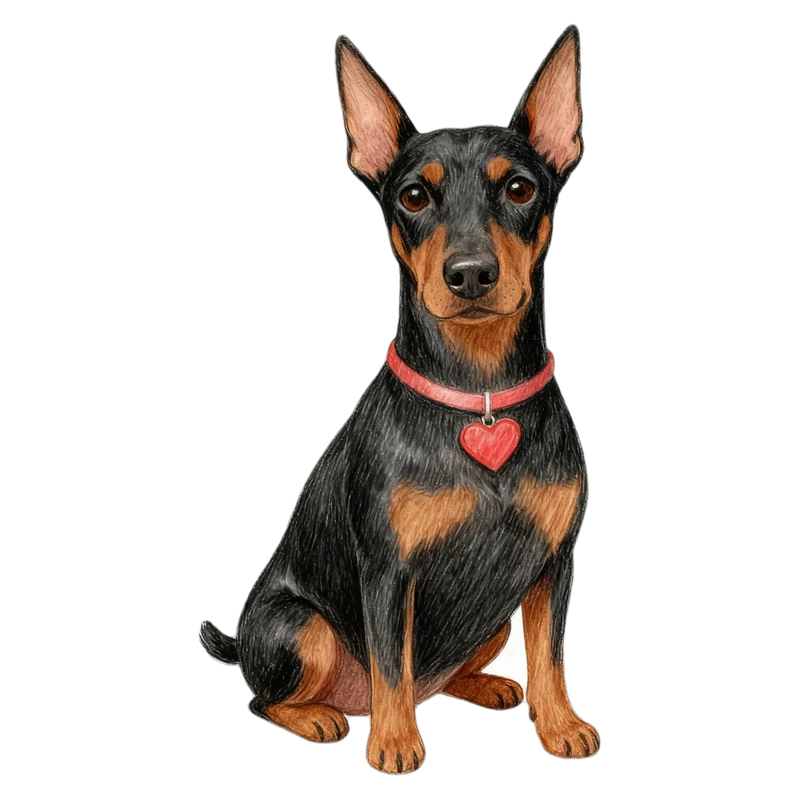
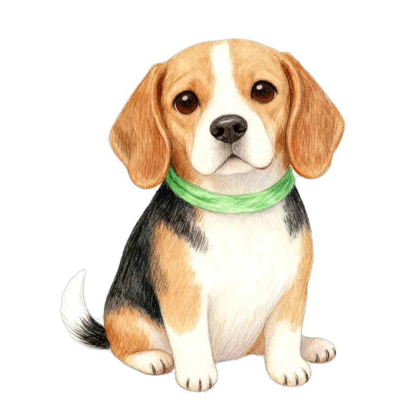
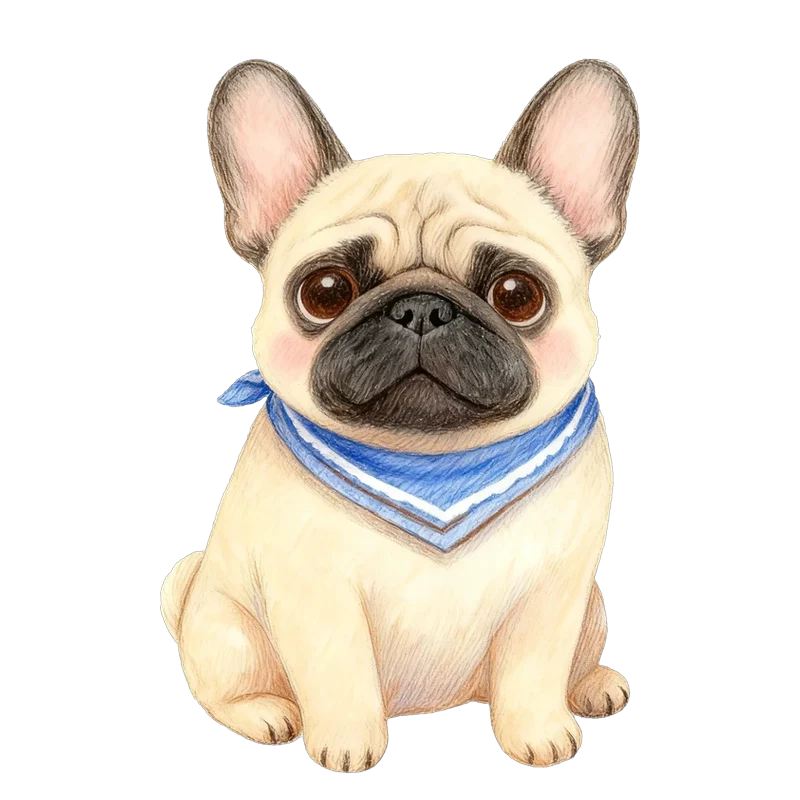

記録の保存 見本
マイページに入れたときの形です。黄色い点線のところが、新しく足すボタンです。
1. 成長の記録を、画像で保存
成長の記録の下に「画像で保存・シェア」ボタン。押すと、右のような1枚の画像ができます。
マイページ ＞ 成長の記録
こむぎの気質の犬種のうつりかわり

2026年11月・1〜6歳（いちばん新しい）フレブル気質
2026年8月・1〜6歳ドーベルマン気質
2026年5月・1〜6歳ビーグル気質画像で保存・シェア
画像は長押しでも保存できます。
できる画像（縦長・SNSにそのまま）
 44Wansonalities
44Wansonalities
こむぎの成長の記録
2026年5月 → 2026年11月・診断3回5月ビーグル気質
→
8月ドーベルマン気質
→

11月フレブル気質のびのび↑犬が好き↑べったり↑
最初のころより、だんだん「のびのび」になってきました。
#44Wansonalities #ワンソナ ・ 44wansona.com2. 記録の引っ越し（機種変更のとき）
設定に「記録の引っ越し」。今の端末で「引っ越しコード」を作り、新しい端末にはりつけるだけです。
マイページ ＞ 設定 ＞ 記録の引っ越し
記録の引っ越し
機種を変えるときや、ブラウザを変えるときに使います。
1今の端末で「コードを作る」記録をまとめた、長い文字のコードができます。
2自分に送るLINEの自分あてやメモに、コードを送っておきます。
3新しい端末で「はりつけて読みこむ」記録がそのまま入ります。
コードを作る
はりつけて読みこむ
「コードを作る」を押したあと
引っ越しコードができました
W44-eyJ2IjoxLCJkb2dzIjp7IuOBk+OCgOOBjiI6eyJ…（ここに長いコード）
コピーする
LINEで自分に送る
引っ越すもの
すべての子の診断・成長の記録もしものときカードおねがいはじめましてガイド予定ワン友帳もしものとき帳写真（入りません）
コードには病院の電話番号なども入るので、自分だけに送ってください。
ファイルではなく「コード」にした理由
スマホでファイルを保存して新しい端末に移すのは、慣れていないと難しいです。コードなら、LINEで自分に送ってはりつけるだけなので、だれでもできます。
写真は大きいのでコードに入りません。新しい端末で、写真だけ選び直してもらいます。